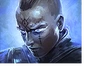
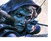
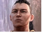
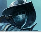

Poe Ninja
当前职业热度排行
展示当前联赛 poe.ninja 职业占比排行，卡片可直接跳转到忍者网对应职业筛选。
主联赛最热
武圣
19.8%当前收录
职业排行
31最后同步
自动刷新
2026年8月23日
武圣
Runes of Aldur · Martial Artist
武圣 在 Runes of Aldur 当前排行靠前，可点进 poe.ninja 查看具体技能、装备和天赋组合。
古灵使徒斗士
Runes of Aldur · Gemling Legionnaire
古灵使徒斗士 在 Runes of Aldur 当前排行靠前，可点进 poe.ninja 查看具体技能、装备和天赋组合。
灵魂行者
Runes of Aldur · Spirit Walker
灵魂行者 在 Runes of Aldur 当前排行靠前，可点进 poe.ninja 查看具体技能、装备和天赋组合。

锐眼
Runes of Aldur · Deadeye
锐眼 在 Runes of Aldur 当前排行靠前，可点进 poe.ninja 查看具体技能、装备和天赋组合。
神谕者
Runes of Aldur · Oracle
神谕者 在 Runes of Aldur 当前排行靠前，可点进 poe.ninja 查看具体技能、装备和天赋组合。
驱炎使
Runes of Aldur · Infernalist
驱炎使 在 Runes of Aldur 当前排行靠前，可点进 poe.ninja 查看具体技能、装备和天赋组合。
风暴编织者
Runes of Aldur · Stormweaver
风暴编织者 在 Runes of Aldur 当前排行靠前，可点进 poe.ninja 查看具体技能、装备和天赋组合。
命源法师
Runes of Aldur · Blood Mage
命源法师 在 Runes of Aldur 当前排行靠前，可点进 poe.ninja 查看具体技能、装备和天赋组合。
泰坦
Runes of Aldur · Titan
泰坦 在 Runes of Aldur 当前排行靠前，可点进 poe.ninja 查看具体技能、装备和天赋组合。
瓦拉煞的门徒
Runes of Aldur · Disciple of Varashta
瓦拉煞的门徒 在 Runes of Aldur 当前排行靠前，可点进 poe.ninja 查看具体技能、装备和天赋组合。
深渊巫妖
Runes of Aldur · Abyssal Lich
深渊巫妖 是 poe.ninja 可筛选职业，目前未进入 Runes of Aldur 占比前 10，适合点进忍者网继续看具体角色。
夏乌拉追随者
Runes of Aldur · Acolyte of Chayula
夏乌拉追随者 是 poe.ninja 可筛选职业，目前未进入 Runes of Aldur 占比前 10，适合点进忍者网继续看具体角色。
亚马逊
Runes of Aldur · Amazon
亚马逊 是 poe.ninja 可筛选职业，目前未进入 Runes of Aldur 占比前 10，适合点进忍者网继续看具体角色。
塑时术师
Runes of Aldur · Chronomancer
塑时术师 是 poe.ninja 可筛选职业，目前未进入 Runes of Aldur 占比前 10，适合点进忍者网继续看具体角色。

祈求者
Runes of Aldur · Invoker
祈求者 是 poe.ninja 可筛选职业，目前未进入 Runes of Aldur 占比前 10，适合点进忍者网继续看具体角色。
巫妖
Runes of Aldur · Lich
巫妖 是 poe.ninja 可筛选职业，目前未进入 Runes of Aldur 占比前 10，适合点进忍者网继续看具体角色。
追猎者
Runes of Aldur · Pathfinder
追猎者 是 poe.ninja 可筛选职业，目前未进入 Runes of Aldur 占比前 10，适合点进忍者网继续看具体角色。
仪祭师
Runes of Aldur · Ritualist
仪祭师 是 poe.ninja 可筛选职业，目前未进入 Runes of Aldur 占比前 10，适合点进忍者网继续看具体角色。
萨满
Runes of Aldur · Shaman
萨满 是 poe.ninja 可筛选职业，目前未进入 Runes of Aldur 占比前 10，适合点进忍者网继续看具体角色。
奇塔弗匠师
Runes of Aldur · Smith of Kitava
奇塔弗匠师 是 poe.ninja 可筛选职业，目前未进入 Runes of Aldur 占比前 10，适合点进忍者网继续看具体角色。
战术家
Runes of Aldur · Tactician
战术家 是 poe.ninja 可筛选职业，目前未进入 Runes of Aldur 占比前 10，适合点进忍者网继续看具体角色。
战争使者
Runes of Aldur · Warbringer
战争使者 是 poe.ninja 可筛选职业，目前未进入 Runes of Aldur 占比前 10，适合点进忍者网继续看具体角色。

猎巫人
Runes of Aldur · Witchhunter
猎巫人 是 poe.ninja 可筛选职业，目前未进入 Runes of Aldur 占比前 10，适合点进忍者网继续看具体角色。
德鲁伊
Runes of Aldur · Druid
德鲁伊 是 poe.ninja 可筛选职业，目前未进入 Runes of Aldur 占比前 10，适合点进忍者网继续看具体角色。
女猎手
Runes of Aldur · Huntress
女猎手 是 poe.ninja 可筛选职业，目前未进入 Runes of Aldur 占比前 10，适合点进忍者网继续看具体角色。
佣兵
Runes of Aldur · Mercenary
佣兵 是 poe.ninja 可筛选职业，目前未进入 Runes of Aldur 占比前 10，适合点进忍者网继续看具体角色。
行者
Runes of Aldur · Monk
行者 是 poe.ninja 可筛选职业，目前未进入 Runes of Aldur 占比前 10，适合点进忍者网继续看具体角色。
游侠
Runes of Aldur · Ranger
游侠 是 poe.ninja 可筛选职业，目前未进入 Runes of Aldur 占比前 10，适合点进忍者网继续看具体角色。
魔巫
Runes of Aldur · Sorceress
魔巫 是 poe.ninja 可筛选职业，目前未进入 Runes of Aldur 占比前 10，适合点进忍者网继续看具体角色。
战士
Runes of Aldur · Warrior
战士 是 poe.ninja 可筛选职业，目前未进入 Runes of Aldur 占比前 10，适合点进忍者网继续看具体角色。
女巫
Runes of Aldur · Witch
女巫 是 poe.ninja 可筛选职业，目前未进入 Runes of Aldur 占比前 10，适合点进忍者网继续看具体角色。